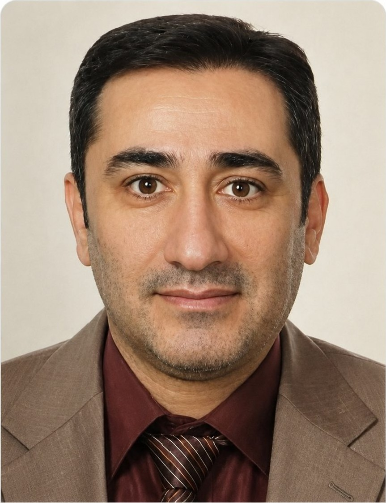
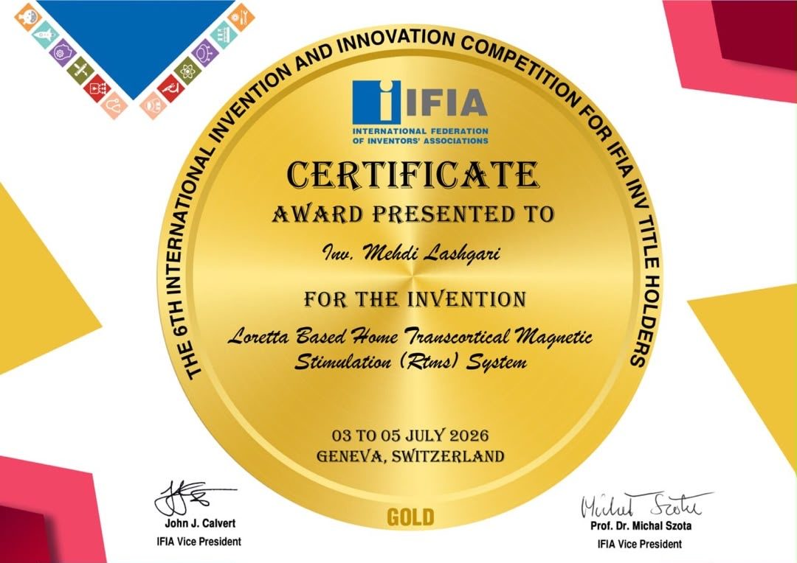
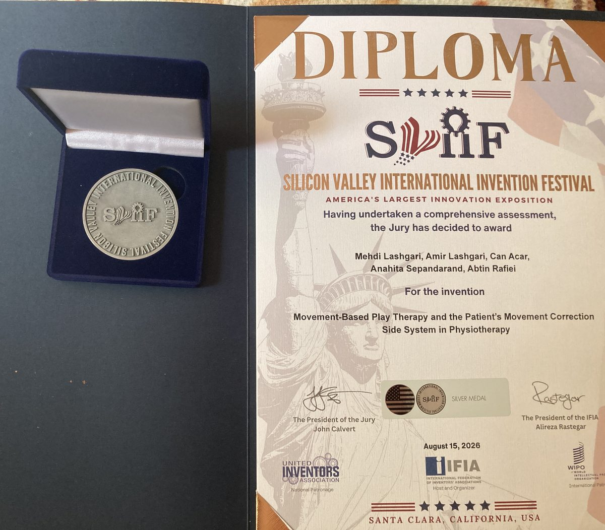

هوش مصنوعی و تحلیل دادههای حرکتی
استفاده از الگوریتمهای هوش مصنوعی برای پردازش دادههای حرکتی و طراحی سیستمهای هوشمند اندازهگیری و تحلیل.
پژوهشگر فناوریهای نوین · مخترع
مهندس صنایع، پژوهشگر و مدیر مجموعه دانشپژوهان بیکران علم
فعالیت حرفهای من بر ایجاد ارتباط میان علوم مهندسی، فناوریهای نوین، هوش مصنوعی و علوم زیستی متمرکز است. در کنار مدیریت و آموزش، در شناسایی، پرورش و هدایت استعدادهای نوآور جوان و حمایت از دانشآموزان مخترع فعالیت میکنم.

مدال طلای IFIA ژنو ۲۰۲۶زمینههایی که پژوهش، طراحی و فعالیت آموزشی من را شکل میدهند.
استفاده از الگوریتمهای هوش مصنوعی برای پردازش دادههای حرکتی و طراحی سیستمهای هوشمند اندازهگیری و تحلیل.
توسعه سیستمهای ارزیابی حرکات بیماران در فرایند فیزیوتراپی، بهرهگیری از بازیسازی برای افزایش مشارکت بیمار و اندازهگیری فشار کف پا هنگام راه رفتن.
پژوهش درباره چسب زیستی مبتنی بر جلبکهای آب شیرین برای ترمیم استخوان و غضروف، و بررسی نانوذرات کیتوسان و PNIPAM برای کاربردهای هدفمند در درمان گلیوبلاستوما.
ترکیب فناوریهای الکترومغناطیسی و اولتراسونیک برای ارزیابی غیرمخرب، احراز اصالت و تعیین خلوص فلزات گرانبها.
گزیدهای از گواهیها و مدالهای بینالمللی؛ برای نمایش بزرگتر روی هر تصویر کلیک کنید.






گزیدهای از اختراعات، مقالات و افتخارات اخیر.
۲۰۲۶
روش غیرمخرب ارزیابی و تعیین خلوص فلزات گرانبها با ترکیب اولتراسونیک، الکترومغناطیس و هوش مصنوعی؛ شماره اظهارنامه GB2618507.4.
مشاهده اختراعات۲۰۲۶
مقالاتی در حوزه هوش مصنوعی پزشکی، توانبخشی و علوم زیستی که در همایشهای بینالمللی پاریس و همایش علوم آزمایشگاهی پذیرفته شدهاند.
مشاهده مقالات۲۰۲۳ تا ۲۰۲۶
مدال طلا در ژنو، مدال نقره در سیلیکونولی و استانبول، و گواهیهای داوری و منتوری در رویدادهای بینالمللی نوآوری.
مشاهده جوایزفعالیت حرفهای من بر ایجاد ارتباط میان علوم مهندسی، فناوریهای نوین، هوش مصنوعی و علوم زیستی متمرکز است.
برای همکاری علمی، راهنمایی تیمهای دانشآموزی یا گفتوگو درباره طرحهای فناورانه در دسترس هستم.